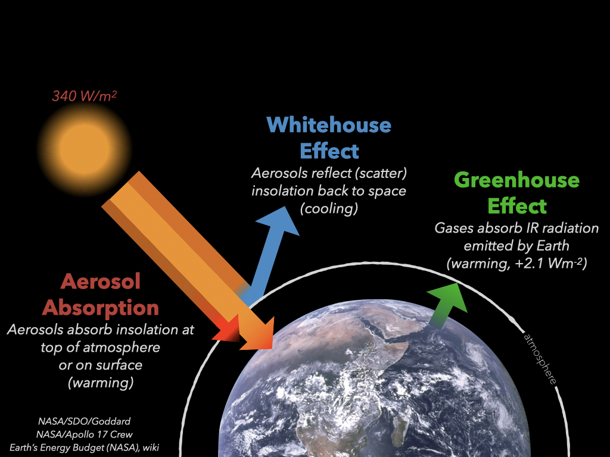

<h2 style = "text-align: left; font-weight: bold; margin-left: 40px; font-size: 84px; margin-top: 10px;">Stoichiometry</h2> <h3 style = "text-align: left; font-weight: bold; margin-left: 40px; font-size: 36px;">Sections 4.1-4.3 (Tro)</h3> <h3 style = "text-align: left; font-weight: thin; margin-left: 40px; margin-top: 100px; font-size: 48px;">Dr. Al Fischer</h3> Use your arrow keys to navigate these slides. If you need help press Shift + ? on the keyboard. --- > <b>Stoichiometry:</b> The numerical relationships between the amounts of reactants and products in chemical reactions. -- -- <center> $\ce{2 H2 + O2 -> 2 H2O}$ </center> -- The coefficients in a chemical reaction specify the relative amounts in moles of each of the substances involved in the reaction. --- class: center <!-- .practice-problem[ Nitric acid (HNO$_3$) slowly decomposes to form nitrogen dioxide (NO${_2}$), water (H$_2$O), and oxygen (O$_2$): $\ce{HNO3 (aq) -> NO2 (g) + H2O (l) + O2 (g)}$ Write the balanced chemical equation for this reaction. ] --> .practice-problem[ Hydrogen peroxide (H$\_2$O$\_2$) decomposes to form water (H$_2$O) and oxygen (O$_2$): $\ce{H2O2 (l) -> H2O (l) + O2 (g)}$ Write the balanced chemical equation for this reaction. ] ??? See Ch 3.10 for a review of balancing equations. ## Step 1: Write the unbalanced equation $\ce{HNO3} \rightarrow \ce{NO2} + \ce{H2O} + \ce{O2}$ ## Step 2: Balance atoms in complex substances O appears the hardest to balance, so I started with that. There are three O in the reactants and 5 in the products as written so I know I need more than 1 HNO$_3$. 2 HNO$_3$ will not work. This gives 6 O in reactants. Adding an addtional water to get 6 O in the reactants throws off the ratio of H. 3 might work -- this gives 9 O in products. With 3 HNO$_3$ we need 3 NO$_2$ in the products to balance N. This leaves 9 O in the products...looking good so far. But wait, we need more H in the products, and adding more H will throw off the oxygen ratio. So 3 does NOT work. 4 works! This gives 12 O in reactants. With 4 HNO$_3$ we also need 4 NO$_2$ to balance N. This gives 4 N, 11 O, and 2 H in the products before balancing other atoms. $\ce{4 HNO3} \rightarrow \ce{4 NO2} + \ce{H2O} + \ce{O2}$ ## Step 3: Balance remaining atoms Based on the last step, we're missing 1 O and 1 H. this is easy to get by placing a 2 in front of water. This yields the balanced equation: $\ce{4 HNO3} \rightarrow \ce{4 NO2} + \ce{2 H2O} + \ce{O2}$ --- class: center <img src="./img/stoich_pizza.png", style="height: 400px;"> -- | Ingredients (makes one pizza) | | ------- | | 1 pre-made crust | | 150 ml pizza sauce | | 2 cups cheese | .image-credit[Image: [CC-Zero](https://commons.wikimedia.org/wiki/File:Pizza-3007395.jpg)] --- class: center <img src="./img/stoich_pizza.png", style="height: 400px;"> Equation: $\ce{1 crust} + \ce{150 ml sauce} + \ce{2 cups cheese} \rightarrow \ce{1 pizza}$ ??? - Limiting ingredient - which ingredient limits how many pizzas you can make? - Excess ingredients - which ingredients do you have extra of? - Theoretical yield - the maximum number of pizzas you can make in an ideal case. - Actual yield - the actual number of pizzas you make after you lose some to burning, the dog, falling on the floor, etc. --- class: center ??? Always go through moles! If you're lost, just keep track of units and use conversion factors to cancel units you don't want and add units you do want. This is called **dimensional analysis**. See p 25 in Tro for a review of dimensional analysis. --- class: center <img src="./img/stoich_combustion.png", style="height: 400px;"> --- exclude: true class: center  --- class: center <h2 style="text-align: center;">Combustion of Octane (moles to moles)</h2> $\ce{C8H18 + 25 O_2 -> 9 H2O + 8 CO2}$ -- How much CO$_2$ is added to the atmosphere if 22 mol of octane is burned? ??? ## Step 1: Balance the equation. ✅ This is done for us. üòÑ ## Step 2: Write down given and unknown (sort) **Given:** 22 mol of octane **Unknown:** mol of CO$_2$ added to atmosphere I like to set this up like this: $\frac{\ce{22 mol octane}}{1} \times \left[ \text{ conversion factors } \right] = x \: \ce{ mol CO2}$ I'll then fill in with the necessary conversion factors to get units of $\ce{mol CO2}$. ## Step 3: Develop a map (strategize) Look at the stoichiometry map and plan your route. In this case we start in moles and end in moles, so we don't have anything additional to do. We just use the molar ratio of octane to CO$_2$, which is $\frac{\text{1 mol octane}}{8 \: \ce{mol CO2}}$. Remember this is a conversion factor that is equivalent to writing $\frac{1}{1}$. ## Step 4: Solve Plug in the conversion factors! Remember, using a conversion factor is equivalent to multiiplying by $\frac{1}{1}$ (if you have the correct conversion) and that units behave like numbers in a calulation (i.e. you can multiply, divide, cancel units, etc). $\frac{\ce{22 mol octane}}{1} \times \left[ \text{ conversion factors } \right] = x \: \ce{ mol CO2}$ $\frac{\ce{22 \cancel{mol octane}}}{1} \times \left[ \frac{8 \: \ce{mol CO2}}{1 \cancel{\text{ mol octane}}} \right] = x \: \ce{ mol CO2}$ $ = 22 \times 8 \: \ce{mol CO2} = 176 \: \ce{mol CO2}$ ## Step 5: Check Does the answer make sense? Yes. From the equation, we see that many (8) moles of carbon dioxide form for every mole of octane we start with. Therefore we expect our answer to be larger than the value we start with by a little less than a factor of 10. That is exactly what we see. Victory! üëè As a second check we can do the problem backwards...how many moles of octane would it take to form 176 moles carbon dioxide with the equation given? --- class: center <h2 style="text-align: center;">Decomposition of Hydrogen Peroxide</h2> $\ce{H2O2 -> H2O + O2}$ .practice-problem[ Determine (1) how many moles of H$\_2$O are produced and (2) how many moles of O$\_2$ are produced when 7.0 moles of H$\_2$O$\_2$ decompose. ] ??? ## Step 1: Balance the equation. $\ce{2 H2O2 -> 2 H2O + O2}$ ## Step 2: Write down given and unknown (sort) **Given:** 7.0 mol $\ce{H2O2}$ **Unknown:** mol of $\ce{O2}$ produced I like to set this up like this: $\frac{\ce{7.0 mol \ce{H2O2}}}{1} \times \left[ \text{ conversion factors } \right] = x \: \ce{ mol O2}$ I'll then fill in with the necessary conversion factors to get units of $\ce{mol CO2}$. ## Step 3: Develop a map (strategize) Look at the stoichiometry map and plan your route. In this case we start in moles and end in moles, so we don't have anything additional to do. We just use the molar ratio of hydrogen peroxide to oxygen, which is $\frac{\text{2 mol}\ce{H2O2}}{1 \: \ce{mol O2}}$. Remember this is a conversion factor that is equivalent to writing $\frac{1}{1}$. ## Step 4: Solve Plug in the conversion factors! Remember, using a conversion factor is equivalent to multiiplying by $\frac{1}{1}$ (if you have the correct conversion) and that units behave like numbers in a calulation (i.e. you can multiply, divide, cancel units, etc). $\frac{\ce{7.0 mol H2O2}}{1} \times \left[ \text{ conversion factors } \right] = x \: \ce{ mol O2}$ $\frac{\ce{7.0 \cancel{mol H2O2}}}{1} \times \left[ \frac{1 \: \ce{mol O2}}{2 \cancel{\text{ mol H2O2}}} \right] = x \: \ce{ mol O2}$ $ = 7.0 \div 2 \: \ce{mol O2} = 3.5 \: \ce{mol O2}$ Note that the molar ratio is *exact*, meaning it has infinite significant digits. ## Step 5: Check Does the answer make sense? Yes. From the equation, we see that we end up with fewer moles of oxygen than the number of moles of hydrogen peroxide we start with. We expect the answer to be about half the number of moles we start with, and that's exactly what we see. üèÅ As a second check we can do the problem backwards...how many moles of octane would it take to form 3.5 moles oxygen with the equation given? --- <h2 style="text-align: center;">Combustion of Octane (mass to mass)</h2> <center> $\ce{C_8H18 + 25 O_2 -> 9 H2O + 8 CO2}$ </center> The world burned $3.7 \times 10^{15}$ grams of gasoline in 2013. How many grams of CO$_2$ did this release to the atmosphere? --- <h2 style="text-align: center;">Combustion of Octane</h2> <center> $\ce{C_8H18 + 25 O_2 -> 9 H2O + 8 CO2}$ </center> <center> <img alt = "[The Fire Tetrahedrod" src ="https://upload.wikimedia.org/wikipedia/commons/9/99/Fire_tetrahedron.svg"> </center> --- <h2 style="text-align: center;">Combustion of Octane</h2> <center> $\ce{C_8H18 + 25 O_2 -> 9 H2O + 8 CO2}$ </center> > <b>Limiting Reactant:</b> The reactant that is completely consumed in a chemical reaction and limits the amount of product. > > Also called the **limiting reagent**. <center> <img alt = "[The Fire Tetrahedrod" src ="https://upload.wikimedia.org/wikipedia/commons/9/99/Fire_tetrahedron.svg"> </center> --- <h2 style="text-align: center;">Combustion of Octane</h2> <center> $\ce{C_8H18 + 25 O_2 -> 9 H2O + 8 CO2}$ </center> > <b>Limiting Reactant:</b> The reactant that is completely consumed in a chemical reaction and limits the amount of product. > > Also called the **limiting reagent**. Any reactant present in a quantity greater than required for complete reaction is said to be in ***excess***. --- <h2 style="text-align: center;">Formation of Hydrochloric Acid</h2> <center> $\ce{H2 (g) + Cl2 (g) -> 2HCl}$ </center> Determine the limiting reagent when reacting 2 moles of hydrogen gas with 3 moles chlorine gas. ??? # Step 1: Balance the equation This is done for us again! ü뮂Äçüî¨Ô∏è # Step 2: Sort - write down what we're given and what we want **Given:** - 2 mol $\ce{H2}$ - 3 mol $\ce{Cl2}$ **Want:** Which is limiting reagent # Step 3: Strategize We need to figure out which reactant (reagent) gets used up first. When we run out of that one the reaction must stop, and that reactant is said to be the *limiting reagent*. The other is said to be in *excess*. *If the diagram below doesn't display properly please refresh the webpage.* <div class="mermaid"> graph LR id1(mol H2)-->id2[mol HCl] id3(mol Cl2)-->id4[mol HCl] id2[mol HCl]-->id5[Smallest Amount Determine Limiting Reagent] id4[mol HCl]-->id5[Smallest Amount Determine Limiting Reagent] id5(Smallest Amount Determine Limiting Reagent)-->id6{mol HCl} </div> From the equation, for every mole of $\ce{H2}$ we get 2 moles $\ce{HCl}$; likewise, for every mole of $\ce{Cl2}$ we get 2 moles $\ce{HCl}$. Intuitively, we can see that in this case the reactant starting with the fewest moles will be the limiting reagent. To calculate this, determine how much product is available for each. # Step 4: Solve ### Starting with H2 $\frac{2 \: \cancel{\ce{mol H2}}}{1} \times \frac{2 :\ \ce{mol HCl}}{1 \: \cancel{\ce{mol H2}}} = 4 \: \ce{mol HCl}$ ### Starting with Cl2 $\frac{3 \: \cancel{\ce{mol Cl2}}}{1} \times \frac{2 :\ \ce{mol HCl}}{1 \: \cancel{\ce{mol Cl2}}} = 6 \: \ce{mol HCl}$ Therefore, $\ce{H2}$ is the limiting reagent because it yields the smallest amount of product. $\ce{Cl2}$ is in excess. # Step 5: Check Does this make sense? Yes. Intuitively, we can see that in this case the reactant starting with the fewest moles will be the limiting reagent. --- <h2 style="text-align: center;">Formation of Hydrochloric Acid</h2> <center> $\ce{H2 (g) + Cl2 (g) -> 2HCl}$ </center> > <b>Theoretical Yield:</b> The amount of product that can be made in a chemical reaction based on the amount of limiting reactant. ??? To determine the theoretical yield, simply calculate the yield using the limiting reagent: $\frac{2 \: \cancel{\ce{mol H2}}}{1} \times \frac{2 :\ \ce{mol HCl}}{1 \: \cancel{\ce{mol H2}}} = 4 \: \ce{mol HCl}$ --- <h2 style="text-align: center;">Formation of Hydrochloric Acid</h2> <center> $\ce{H2 (g) + Cl2 (g) -> 2HCl}$ </center> > <b>Actual Yield:</b> The amount of product actually produced by a chemical reaction. ??? The actual yield is measured in lab. --- <h2 style="text-align: center;">Formation of Hydrochloric Acid</h2> <center> $\ce{H2 (g) + Cl2 (g) -> 2HCl}$ </center> > <b>Percent Yield:</b> The ratio of the actual yield to the theoretical yield, converted to a percentage. <div style = 'margin-top: 70px;'></div> <center> $\text{Percent Yield}=\frac{\text{Actual Yield}}{\text{Theoretical Yield}} \times 100\%$ </center> --- <h2 style="text-align: center;">Percent Yield (Mass to Mass)</h2> <center> $\ce{MgCO3 + HCl -> MgCl2 + CO2 + H2O}$ </center> The above reaction was conducted with 5.27 g magnesium carbonate (MgCO$_3$) and 10.0 g HCl. It yielded 3.77 g MgCl$_2$. Determine the limiting reagent, theoretical yield (in grams), and percent yield. ??? # Step 1: Balance the equation $\ce{MgCO3 + 2HCl -> MgCl2 + CO2 + H2O}$ # Step 2: Sort - Write down given/unkonws **Given:** - 5.27 g magnesium carbonate (MgCO$_3$) - 10.0 g HCl - Actual yield: 3.77 g MgCl$_2$ **Want:** - limiting reagent - theoretical yield (in grams) - percent yield. $\frac{5.27 \: \ce{g MgCO3}}{1} \times \left[ \text{ conversion factors } \right] = \text{ g } \ce{MgCl2}$ $\frac{10.0 \: \ce{g HCl}}{1} \times \left[ \text{ conversion factors } \right] = \text{ g } \ce{MgCl2}$ # Step 3: Strategize ## Determine limiting reagent. This problem requires that we convert from grams to moles and then back to grams. Follow the map! # Step 4: Solve ## Limiting Reagent #### Magnesium Carbonate $\frac{5.27 \cancel{\text{ g } \ce{MgCO3}}}{1} \times \frac{1 \cancel{\text{ mol } \ce{MgCO3}}}{84.3139 \cancel{\text{ g } \ce{ MgCO3}}} \times \frac{1 \text{ mol } \ce{MgCl2}}{1 \cancel{\text{ mol } \ce{ MgCO3}}} \times \frac{95.211 \text{ g } \ce{ MgCl2}}{1 \cancel{\text{ mol } \ce{MgCl2}}}= 5.9511 \text{ g } \ce{MgCl2}$ #### Hydrochloric Acid $\frac{10.0 \cancel{\text{ g } \ce{HCl}}}{1} \times \frac{1 \cancel{\text{ mol } \ce{HCl}}}{36.458 \cancel{\text{ g } \ce{ HCl}}} \times \frac{1 \text{ mol } \ce{MgCl2}}{2 \cancel{\text{ mol } \ce{ HCl}}} \times \frac{95.211 \text{ g } \ce{ MgCl2}}{1 \cancel{\text{ mol } \ce{MgCl2}}}= 13.195 \text{ g } \ce{MgCl2}$ **Because magnesium carbonate forms the least amount of product it is the limiting reagent.** ## Theoretical Yield The theoretical yield is equal to the yield determined from the limiting reagent: $\frac{5.27 \cancel{\text{ g } \ce{MgCO3}}}{1} \times \frac{1 \cancel{\text{ mol } \ce{MgCO3}}}{84.3139 \cancel{\text{ g } \ce{ MgCO3}}} \times \frac{1 \text{ mol } \ce{MgCl2}}{1 \cancel{\text{ mol } \ce{ MgCO3}}} \times \frac{95.211 \text{ g } \ce{ MgCl2}}{1 \cancel{\text{ mol } \ce{MgCl2}}}= 5.9511 \text{ g } \ce{MgCl2}$ ## Percent Yield $\text{Percent Yield} = \frac{\text{Actual Yield}}{\text{Theoretical Yield}} \times 100 \%$ $ = \frac{3.77 \text{ g } \ce{MgCl2}}{5.9511 \text{ g } \ce{MgCl2}} \times 100 \% = 63.3\%$ # Step 5: Check We start with ~5 g magnesium carbonate, and since it's the limiting reagent we expect a similar amount of magnesium chloride to form. This is what we see. We see a percent yield < 100%. If the percent yield were > 100% we likely did something incorrectly. (It's not possible to make matter from nothing!) --- exclude: true <h2 style="text-align: center;">Amount of Excess - Nitrogen Dioxide</h2> --- ## Vocabulary & Concepts - Stoichiometry - Limiting Reagent (syn. limiting reactant) - In Excess - Theoretical Yield - Actual Yield - Percent Yield ## Challenge Problem <!-- <center> $\ce{3 NO2 (g) + H2O (l) -> 2 HNO3 (l) + NO (g)}$ </center> The above reaction was conducted with 5 mol NO$\_2$ and 1 mol H$\_2$O. How many moles of reactant are in excess after completion? --> The *unbalanced* chemical equation for (aerobic) cellular respiration is: $\ce{C6H18O6 + O2 -> H2O + CO2}$ Suppose 20.78 mmol of glucose (C$\_6$H$\_{12}$O$\_6$) are consumed by this reaction in excess oxygen. How much CO$\_2$ is produced? ------- *Access these slides at: alphonse.github.io/wcu-tt/Stoichiometry-Guest-Lecture.html* ??? # Vocabulary - **Stoichiometry:** The numerical relationships between the amounts of reactants and products in chemical reactions. - **Limiting Reactant:** The reactant that is completely consumed in a chemical reaction and limits the amount of product. Also called the **limiting reagent**. - **In excess:** Any reactant present in a quantity greater than required for complete reaction is *in excess*. - **Theoretical Yield:** The amount of product that can be made in a chemical reaction based on the amount of limiting reactant. Determined by the limiting reactant. - **Actual Yield:** The amount of product actually produced by a chemical reaction. Measured in the laboratory. - **Percent Yield:** $\frac{\text{theoretical yield}}{\text{actual yield}} \times 100\%$ # Challenge Problem ## Step 1: Balance the equation. $\ce{C6H18O6 + 6 O2 -> 6 H2O + 6 CO2}$ ## Step 2: Write down given and unknown (sort) **Given:** 20.78 mmol of glucose **Unknown:** mol of CO$_2$ produced I like to set this up like this: $\frac{\ce{20.78 mmol octane}}{1} \times \left[ \text{ conversion factors } \right] = x \: \ce{ mol CO2}$ I'll then fill in with the necessary conversion factors to get units of $\ce{mol CO2}$. ## Step 3: Develop a map (strategize) Look at the stoichiometry map and plan your route. In this case we start in millimoles. The problem doesn't specify which units we should end in, so we'll assume millimoles (the same as the starting units); thus, this is a moles to moles problem. We just use the molar ratio of glucose and CO$_2$, which is $\frac{\text{1 mol glucose}}{6 \: \ce{mol CO2}}$. Remember this is a conversion factor that is equivalent to writing $\frac{1}{1}$. ## Step 4: Solve Plug in the conversion factors! Remember, using a conversion factor is equivalent to multiiplying by $\frac{1}{1}$ (if you have the correct conversion) and that units behave like numbers in a calulation (i.e. you can multiply, divide, cancel units, etc). Likewise, SI prefixes behave like numbers in a calculation. We can just leave the milli alone and it will end up in the answer -- no extra conversion needed! $\frac{\ce{20.78 mmol glucose}}{1} \times \left[ \text{ conversion factors } \right] = x \: \ce{ mol CO2}$ $\frac{\ce{20.78 m \cancel{mol} \cancel{glucose}}}{1} \times \left[ \frac{6 \: \ce{mol CO2}}{1 \cancel{\text{ mol }} \cancel{\text{glucose}}} \right] = x \: \ce{ mmol CO2}$ $ = 20.78 \text{ m} \times 6 \: \ce{mol CO2} = 124.7 \: \ce{mmol CO2}$ (Notice that the $\text{m}$ (milli) never cancels out and so ends up in the answer.) ## Step 5: Check Does the answer make sense? Yes. From the equation, we see that 6 moles of carbon dioxide form for every mole of glucose we start with. Therefore we expect our answer to be larger than the value we start with, but not anywhere near a factor of 10 grater. That is what we see. And we have the right units too! Declare victory! üö© <!-- =============================================================================== -->